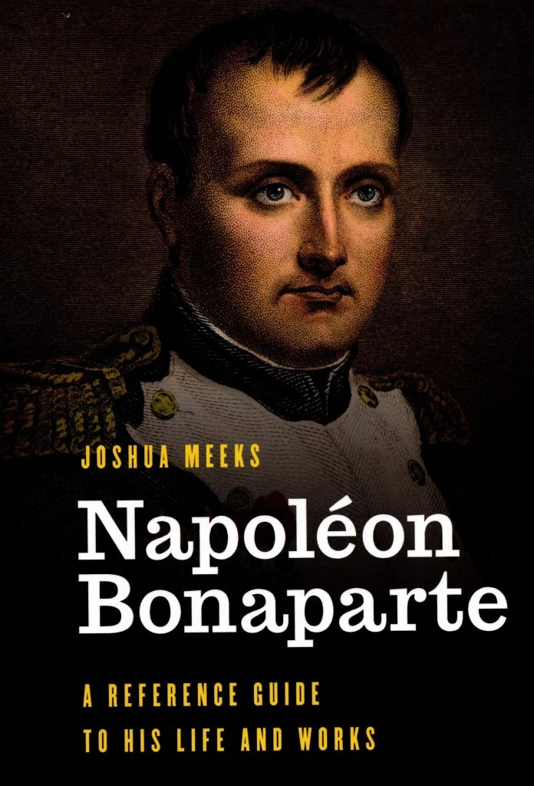
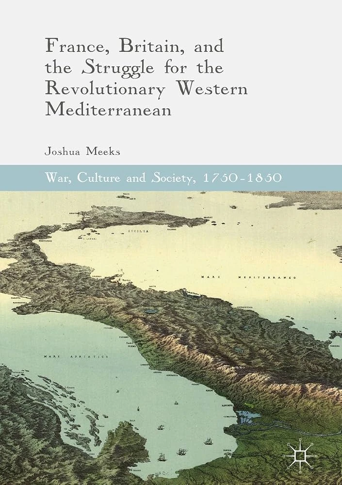

Historian of strategy, war, and statecraft
Associate Professor of Strategy and Policy, US Naval War College
My work centers on judgment under uncertainty: how statesmen and commanders built coalitions, managed neutrality, and confronted defeat, with particular attention to the Revolutionary and Napoleonic Mediterranean.
I am the author of France, Britain, and the Struggle for the Revolutionary Western Mediterranean (Palgrave Macmillan, 2017) and Napoleon Bonaparte: A Reference Guide to His Life and Works (Rowman & Littlefield, 2020), and I am under contract with Bloomsbury for A Global History of the Napoleonic Era.
At the Naval War College I direct the Fundamentals of Strategy course in the College of Distance Education, after five years directing the Strategy and War course for the Fleet Seminar Program. I design classroom simulations and take part in professional wargaming, building exercises that ask mid-career officers and civilians to reason through contested strategic problems where there is no school solution.
I am Book Review Editor and a member of the Editorial Board of the International Journal of Naval History.
I hold a PhD in History from Florida State University, where I was a member and Research Fellow of the Institute on Napoleon and the French Revolution. My dissertation, “Coalitions and Kingdoms: Revolutionary Statecraft in the Western Mediterranean,” was supervised by Rafe Blaufarb.
Recent and forthcoming
- Under contract
A Global History of the Napoleonic Era (Bloomsbury, expected 2027)
- New
Three strategy simulations in Short Games and Active Learning in Political Science: Beating the Clock (Routledge, 2026)
- Listen
“Britain’s Southern Campaign and the Fight for America,” Strategy Matters podcast (2026)
Selected chapters and articles
- 2027“Towards a Theory of Defeat,” in Getting Them Out: Managing Strategic WithdrawalForthcoming
- —“Weapons of the Strong? Neutrality in the Age of Revolutions,” Clio@ThémisForthcoming
- —“Designing, Delivering, and Assessing Joint Professional Military Education in Distance Learning,” in The Routledge Handbook of Professional Military EducationForthcoming
- 2024“The Savage State: Humans, Nature and Governance in Eighteenth-Century Corsica,” in Entire of Itself? Towards an Environmental History of IslandsOpen access
Research
Strategy and diplomacy in the Age of Revolutions
My research examines the strategic and diplomatic history of the Age of Revolutions, especially in the Mediterranean, alongside broader questions in strategic theory, including neutrality and the nature of defeat.
Books
- CoverA Global History of the Napoleonic EraBloomsbury · under contract, expected 2027
- Napoleon Bonaparte: A Reference Guide to His Life and WorksRowman & Littlefield · 2020

- France, Britain, and the Struggle for the Revolutionary Western MediterraneanPalgrave Macmillan · 2017Series: War, Culture and Society, 1750–1850

Articles and chapters
- 2027“Towards a Theory of Defeat,” in Getting Them Out: Managing Strategic WithdrawalForthcoming
- —“Designing, Delivering, and Assessing Joint Professional Military Education in Distance Learning,” in The Routledge Handbook of Professional Military EducationForthcoming
- —“Weapons of the Strong? Neutrality in the Age of Revolutions,” Clio@Thémis, special issue “Les mondes de la neutralité prémoderne (1400–1800): institutions, normes et pratiques”Forthcoming
- 2026“Atomic Questions,” “Kaiserliche Marine,” and “Strategic Crossroads: Athens vs. Melos,” in Short Games and Active Learning in Political Science: Beating the Clock, ed. Derek Glasgow, Mark Harvey, Ryan Gibb, and James Fielder (Routledge)
- 2024“The Savage State: Humans, Nature and Governance in Eighteenth-Century Corsica,” in Entire of Itself? Towards an Environmental History of Islands, ed. Pavla Šimková and Milica Prokic (White Horse Press)Open access
Works in progress
- Article“Between the Rock and a Hard Place: Spanish Ontological Security during the Age of Revolutions”
- Article“Counting the Nation: Provincial Courts and the Making of the French Civil Code, 1801–1804”
Public scholarship
- 2015“Counter-Revolutionary Corsica: Pasquale Paoli and Diplomacy in the British Mediterranean,” Age of Revolutions
- 2018“Recovering Refugees from 1794 Toulon to Today,” Age of Revolutions
Book reviews
- 2024Ian Germani, Dying for France, in Journal of Military History
- 2021Philip Bowring, Empire of the Winds: The Global Role of Asia’s Great Archipelago, in Naval War College Review 74, no. 1
- 2019Robert Holland, The Warm South: How the Mediterranean Shaped the British Imagination, in Journal of British Studies 58, no. 3
- 2018James Kolla, Sovereignty, International Law, and the French Revolution, H-Diplo
Teaching & Wargaming
Teaching strategy to those who practice it
I teach strategy to mid-career military officers and government civilians, and I design simulations and exercises that put students in the position of decision-makers facing incomplete information and contested choices.
US Naval War College
- 2026–Course Director, Fundamentals of Strategy, College of Distance Education
- 2021–2026Course Director, Strategy and War, Fleet Seminar Program
- 2020–Associate Professor of Strategy and Policy
Simulation and game design
- Three published simulations, “Atomic Questions,” “Kaiserliche Marine,” and “Strategic Crossroads: Athens vs. Melos,” in Short Games and Active Learning in Political Science: Beating the Clock (Routledge, 2026)
- An interactive, AI-driven strategy exercise on the Vietnam War in which each turn is generated live, the seminar debates every decision, and the game deliberately withholds a school solution
Wargaming
I take part in fleet-sponsored wargames as an analyst, red-cell player, and adjudicator (2025–present).
Assessment and professional writing
- Chair, Perry Award, Naval War College writing awards (2025–present)
- Judge, Naval War College Foundation writing awards (2020–present)
Teaching with AI
- “If You Can’t Beat Them, Join Them: Experimenting with AI in the Design and Execution of a Course,” AI in Practice, US Naval War College (2026)
Earlier teaching
- 2016–2020Assistant Professor of History and Founding Director of the Honors Program, Northwest University
- 2011–2016Instructor at the University of South Florida, Seminole State College, and Florida State University, including a study-abroad semester in London
Courses taught
Strategy and WarFundamentals of StrategyEarly Modern Europe19th-Century EuropeFrench Revolution and NapoleonWorld War IWorld War IIModern GermanyAge of EmpiresWar and SocietyPerspectives in Modern WarfareEmpires in CompetitionGlobal History of PiracyRefugees, Past and PresentHistory of AsiaModern ChinaModern IndiaHistory of ScienceHistorical Theory and Methods
Speaking & Media
Podcasts, lectures, and papers
I am glad to join podcasts, lectures, and panels on Napoleonic and Revolutionary-era warfare and diplomacy, naval history, strategic theory, and wargaming in education.
Podcasts
- 2026“Britain’s Southern Campaign and the Fight for America”Strategy Matters, episode 20 · Apple Podcasts
- Episode“How the Royal Navy Dominated the Napoleonic Wars”Generals and Napoleon · Apple Podcasts
- Episode“The Battle of Trafalgar: How Nelson Defeated Napoleon at Sea”Generals and Napoleon · Apple Podcasts
- Episode“Clausewitz vs. Jomini: Two Competing Theories of War”Generals and Napoleon · Apple Podcasts
Watch
- 2026“Hidden Victories: Cumulative Pressure and the Long Road to Control in the Pacific”Fort Rodman Military Museum Speaker Series · YouTube
- 2019“Corsica and the Ruins of Empire”Western Society for French History · H-France on YouTube
- 2015“Resources and Revolution: The Struggle for Corsican Timber”Society for French Historical Studies · H-France Salon, vol. 7, no. 8 · YouTube
Public lectures
- 2026“Hidden Victories: Cumulative Pressure and the Long Road to Control in the Pacific”Fort Rodman Military Museum Speaker Series
- 2019“The Global and National in the Revolutionary Era”Keynote, Southeast Regional Graduate Conference
- 2019“The Battle of Paoli and the Rhetoric of Liberty”Keynote, Cascade Chapter, Sons of the American Revolution
Selected conference papers
- 2026“Empire at Home: Violence, Administration, and the Making of French Rule in Corsica, 1790–1815”Violence and Empire from the Early 1800s to the End of the Great War
- 2025“Weapons of the Strong? Neutrality in the Age of Revolutions”Symposium: The Worlds of Premodern Neutrality
- 2024“Gilbert Elliot, Imperfect Agent of Empire”Society for Military History
- 2024“The Copenhagen Dilemma”Consortium on the Revolutionary Era
- 2023“Defining a Theory of Defeat”Rethinking War
- 2023“Blood from Stone: Ontology, History, and the State”Worlds Together? Futures of Global History
- 2023“The Campaign Against Tuscan Neutrality during the First Coalition”Consortium on the Revolutionary Era
Curriculum Vitae
Full record
My complete CV, with all publications, presentations, service, and awards.
Last updated November 2026
Contact
Get in touch
Publishers or reviewers interested in the International Journal of Naval History are welcome to contact me at either address.